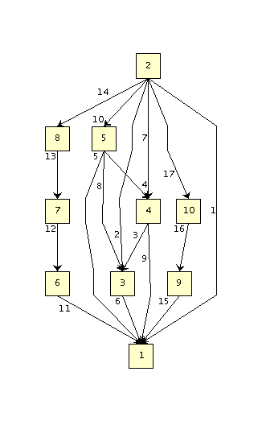

y.io.IOHandler
y.io.TGFIOHandler
y.io.IOHandler
y.io.TGFIOHandler
|
|||||||||
| PREV CLASS NEXT CLASS | FRAMES NO FRAMES | ||||||||
| SUMMARY: NESTED | FIELD | CONSTR | METHOD | DETAIL: FIELD | CONSTR | METHOD | ||||||||
java.lang.Object
public class TGFIOHandler
Reads and Writes a Graph2D in a trivial graph format (TGF).
The TGF format can only read and write the structure of a graph, but not the graphical attributes associated with its nodes and edges. Therefore upon reading a graph all nodes and edges will be initialized with default realizer objects provided by Graph2D. TGF has the following format:
file = node_list
#
edge_list
node_list = node_item node_list | node_item | []
node_item = node_id [node_name]
edge_list = edge_item edge_list | edge_item
edge_item = source_node_id target_node_id [edge_name]
source_node_id = node_id
target_node_id = node_id
An example with 10 nodes is the following:
1 a node
2 another node
3 yet another node
4 another one
5 and again
6 again
7 again
8 again
9 almost there
10 last node
#
2 1
2 3
4 3
5 4
5 1
3 1
2 4
5 3
4 1
2 5
6 1
7 6
8 7
2 8
9 1
10 9
2 10
The example above corresponds to the graph structure depicted below:

| Constructor Summary | |
|---|---|
TGFIOHandler()
Instantiates a new TGFIOHandler. |
|
| Method Summary | |
|---|---|
boolean |
getAssignEdgeLabels()
Returns whether or not to ignore node labels when reading or writing nodes. |
boolean |
getAssignNodeLabels()
Returns whether or not to ignore node labels when reading or writing nodes. |
String |
getFileFormatString()
Returns the TGF file format string. |
String |
getFileNameExtension()
Returns the TGF file name extension, i.e. |
void |
read(Graph2D graph,
InputStream in)
Fills the contents of the given graph from an input stream. |
void |
setIgnoreEdgeLabels(boolean ignore)
Whether or not to ignore edge labels when reading or writing edges. |
void |
setIgnoreNodeLabels(boolean ignore)
Whether or not to ignore node labels when reading or writing nodes. |
void |
write(Graph2D graph,
OutputStream out)
Writes the contents of the given graph in TGF format to a stream. |
| Methods inherited from class y.io.IOHandler |
|---|
canRead, canWrite, canWriteSubset, createObjectInputStream, createObjectOutputStream, hide, read, read, shouldSerialize, shouldSerialize, write, writeSubset, writeSubset |
| Methods inherited from class java.lang.Object |
|---|
clone, equals, finalize, getClass, hashCode, notify, notifyAll, toString, wait, wait, wait |
| Constructor Detail |
|---|
public TGFIOHandler()
| Method Detail |
|---|
public void setIgnoreNodeLabels(boolean ignore)
public void setIgnoreEdgeLabels(boolean ignore)
public boolean getAssignNodeLabels()
false
public boolean getAssignEdgeLabels()
true
public String getFileFormatString()
getFileFormatString in class IOHandlerpublic String getFileNameExtension()
getFileNameExtension in class IOHandler
public void read(Graph2D graph,
InputStream in)
throws IOException
read in class IOHandlerIOExceptionin - The input stream being read from
public void write(Graph2D graph,
OutputStream out)
throws IOException
write in class IOHandlerIOExceptionout - The OutputStream being written to.
|
© Copyright 2000-2010, yWorks GmbH. All rights reserved. |
||||||||
| PREV CLASS NEXT CLASS | FRAMES NO FRAMES | ||||||||
| SUMMARY: NESTED | FIELD | CONSTR | METHOD | DETAIL: FIELD | CONSTR | METHOD | ||||||||